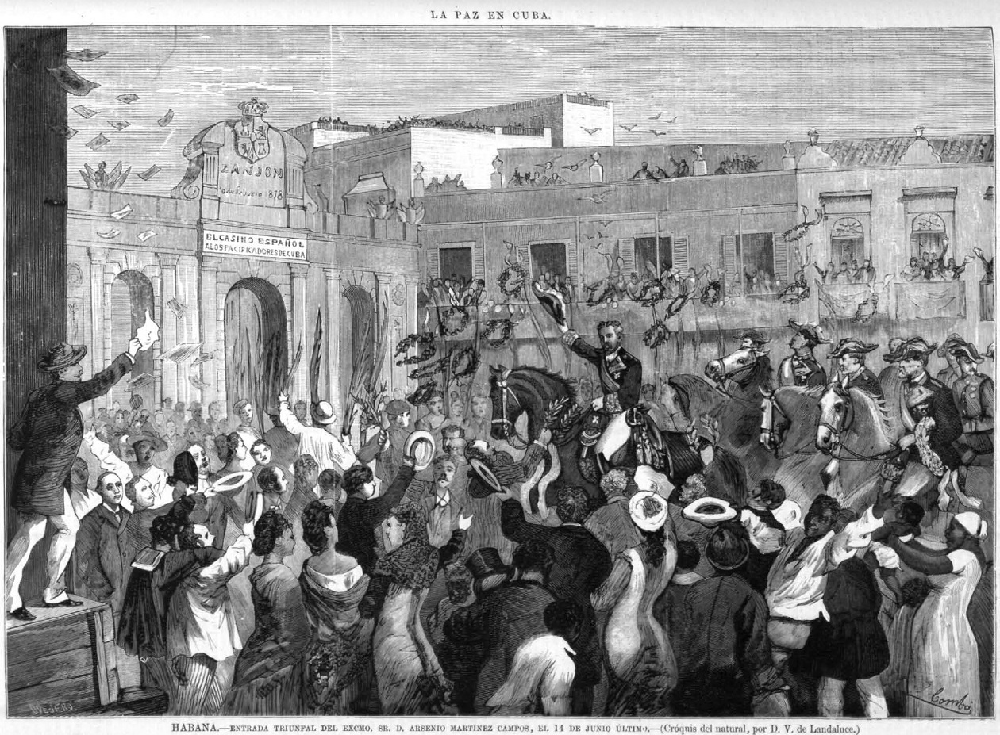
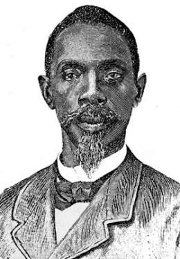
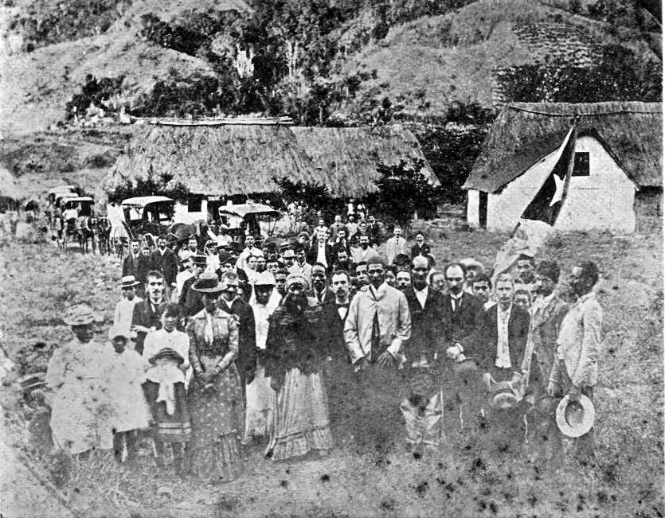
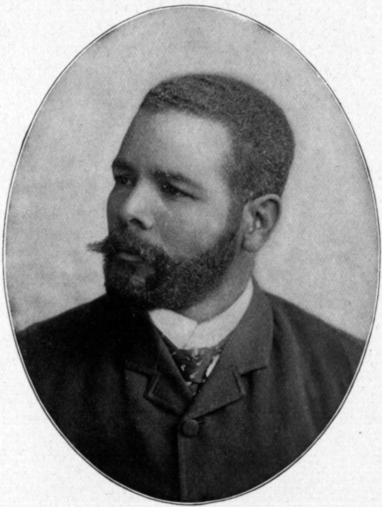

Aula 11
Aula 11Era das abolições III
Cuba, abolição e independência
Aula 11Acesse a apresentação
Abra os slides no celular e acompanhe no seu ritmo.
Aula 11Objetivos da aula
- Analisar a participação de escravizados, libertos e negros livres na luta por independência de Cuba.
- Compreender a relação entre a abolição da escravidão e a independência.
Aula 11Uma breve cronologia das guerras de independência de Cuba
Aula 11Guerra dos Dez Anos (1868-1878)
- Início da luta pela independência de Cuba contra o domínio espanhol.
- Participação de pequenos proprietários, negros e libertos.
- Pacto de Zanjón (10 de fevereiro de 1878)
- Resistência em Oriente, liderada por Antonio Maceo
Aula 11Entrada triunfal de Martínez Campos

Aula 11Guerra Chiquita (1879-1880)
- Liderança de Calixto Garcia e Guillermo Moncada, foi rapidamente derrotada, mas que manteve viva a resistência cubana.
Aula 11Guillermo Moncada

Aula 11Guerra de Independência (1895-1898)
- Liderada por José Martí e Antônio Maceo, culminando na intervenção dos EUA.
Aula 11José Martí

Aula 111898 e a Guerra Hispano-Americana
- Intervenção dos EUA leva à independência formal de Cuba em 1902, após ocupação americana.
Aula 11Questões Sociais e Mobilização Racial
Participação Negra: Os cubanos negros viram na independência uma oportunidade de conquistar liberdade e igualdade social.
Exército Libertador: Composto por uma diversidade racial significativa, com líderes como Antônio Maceo.
Racismo e Desconfiança: A participação negra gerou temor entre as elites brancas sobre as consequências sociais de uma revolução liderada por negros.
Aula 11Relação com o Cenário Internacional
Impacto das Revoltas Haitianas: A Revolução Haitiana serviu de inspiração, mas também gerou medo entre as elites brancas de Cuba.
Intervenção dos EUA: Os EUA intervêm na guerra cubana, preocupados com uma revolução liderada por negros.
Apoio Internacional: A luta pela independência cubana atraiu simpatia internacional, especialmente de ativistas abolicionistas.
Aula 11Abolição entre a guerra a legislação
SCOTT, Rebecca J. Abolição Gradual e a Dinâmica da Emancipação dos Escravos em Cuba, 1868-86 | Estudos Econômicos (São Paulo). Estudos Econômicos, v. 17, n. 3, p. 457–485, 1987.
Aula 11A Rebelião de 1868
- Pequenos proprietários revoltados contra o governo espanhol e novas taxações.
- Libertação de escravos pelos insurgentes para fortalecer o exército rebelde.
- Escravos libertados tornaram-se soldados, simbolizando a luta pela liberdade e desafiando o sistema escravista em Cuba.
Aula 11A Lei Moret de 1870
- Libertava crianças nascidas a partir de 1868 e escravos com mais de 60 anos.
- Proibia o uso de castigos corporais como o açoite.
- Crianças libertas deviam trabalhar até os 18 anos.
- Resistência dos senhores de escravos limitava a aplicação efetiva da lei.
Aula 11O Patronato de 1880
- O patronato criou uma transição gradual para a liberdade, mantendo os ex-escravos sob controle dos senhores.
- Um quarto dos patrocinados deveria ser libertado a cada ano a partir de 1885.
- Ex-escravos ainda estavam sujeitos a castigos e trabalhavam para seus antigos senhores.
- Embora o patronato permitisse a autocompra, muitos senhores tentavam manter as estruturas da escravidão intactas.
Aula 11O Fim dos Castigos Corporais e a Abolição Completa
- A abolição formal dos castigos corporais marcou o declínio da escravidão em Cuba.
- Mesmo após a proibição, senhores tentaram resistir ao fim do controle sobre os ex-escravos.
Aula 11Abolição Final (1886)
- Em 1886, o patronato foi finalmente abolido, culminando na abolição completa da escravidão.
- O fim da escravidão foi o resultado de uma luta prolongada entre escravizados e senhores em Cuba.
Aula 11Antiescravismo transnacional
MATA, I. M. Raça e antiescravismo no Caribe espanhol: o ativismo de Antonio Maceo e Ramón Emeterio Betances. Revista Brasileira de História, v. 41, n. 86, p. 13–37, jan. 2021.
Aula 11Ambiente Político do Caribe Espanhol (1863-1881)
- Guerras de Independência: Cuba e Porto Rico enfrentaram revoltas anticoloniais que buscavam a abolição da escravidão e a independência da Espanha.
- Estrutura racial e econômica: Essas regiões eram economicamente dependentes do trabalho escravo e organizadas por rígidas hierarquias raciais.
- Debate sobre abolição: A discussão sobre a abolição da escravidão ganhava força, mas enfrentava resistência das elites brancas e coloniais.
Aula 11Protagonismo Negro na Luta Abolicionista
- Antonio Maceo: Líder militar cubano nas guerras de independência, defendeu a abolição como passo essencial para a liberdade de Cuba.
- Ramón Emeterio Betances: Médico e revolucionário porto-riquenho, ativista contra a escravidão e pela independência, lutou pelos direitos dos negros.
- Solidariedade racial: Maceo e Betances viam a união dos negros do Caribe como fundamental para derrotar a opressão colonial e racial.
Aula 11Antonio Maceo

Aula 11Redes Transnacionais e Conexões Baseadas em Raça
- Correspondência e Diplomacia: Maceo e Betances mantinham contatos com abolicionistas e líderes negros em outras regiões do Caribe e das Américas.
- Redes transnacionais: Eles ajudaram a construir alianças antiescravistas que transcendiam fronteiras, conectando o Caribe e as Américas na luta contra a escravidão.
Aula 11Referência ao Haiti no Vocabulário Político
- Exemplo de Revolução: A Revolução Haitiana (1791-1804) inspirou ativistas negros como Maceo e Betances, que viam o Haiti como símbolo de liberdade.
- Presença constante: O Haiti era frequentemente evocado em seus discursos e escritos, representando o modelo de uma revolução bem-sucedida contra a escravidão.
- Solidariedade racial: Maceo, em particular, buscava apoio haitiano na luta contra a escravidão em Cuba, destacando a importância da aliança racial no Caribe.
Aula 11Impacto e Legado do Ativismo Abolicionista
Abolição e Independência: A luta de Maceo e Betances foi central para a abolição da escravidão e os movimentos de independência em Cuba e Porto Rico.
Herança racial e política: Seu ativismo criou uma identidade política e racial transnacional, conectando o Caribe com outras regiões das Américas.
Continuidade da Luta: O legado de Maceo e Betances inspirou gerações futuras a continuar a luta por direitos civis e igualdade racial nas Américas.
Aula 11Bibliografia básica
- SCOTT, Rebecca J. Abolição gradual e a dinâmica da emancipação dos escravos em Cuba, 1868-86. Estudos Econômicos, v. 17, n. 3, p. 457–485, 1987.
- MATA, I. M. Raça e antiescravismo no Caribe espanhol: o ativismo de Antonio Maceo e Ramón Emeterio Betances. Revista Brasileira de História, v. 41, n. 86, p. 13–37, 2021.
Aula 11Bibliografia complementar
- FERRER, Ada. Cuba, 1898: Rethinking Race, Nation, and Empire. Radical History Review, v. 1999, n. 73, p. 22–46, 1999.
- HELG, Aline. Sentido e impacto de la participación negra en la guerra de independencia de Cuba. Revista de Indias, v. 58, n. 212, p. 47–63, 1998.